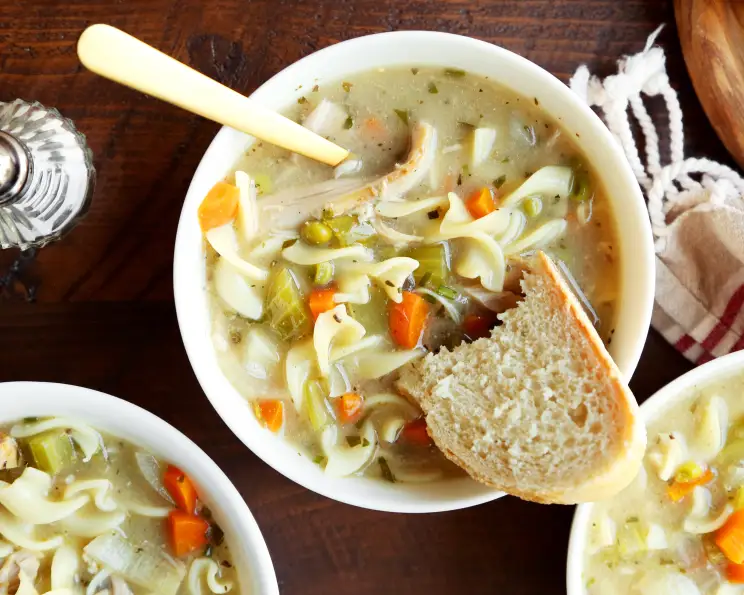
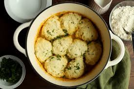

Mediterranean Kale & White Bean Soup With Sausage

A hearty, flavorful and comforting anytime soup, with everything you want in one bowl!
Lazy, Creamy Slow-Cooker Chicken Noodle Soup
Just as stated, it really is the perfect lazy soup. You just put everything in the slow cooker and let it go. Great for this cold weather.
Easy Bisquick Dumplings
It doesn't get any easier than this. The dumplings were soft and tender. I added them to canned soup to spruce it up.